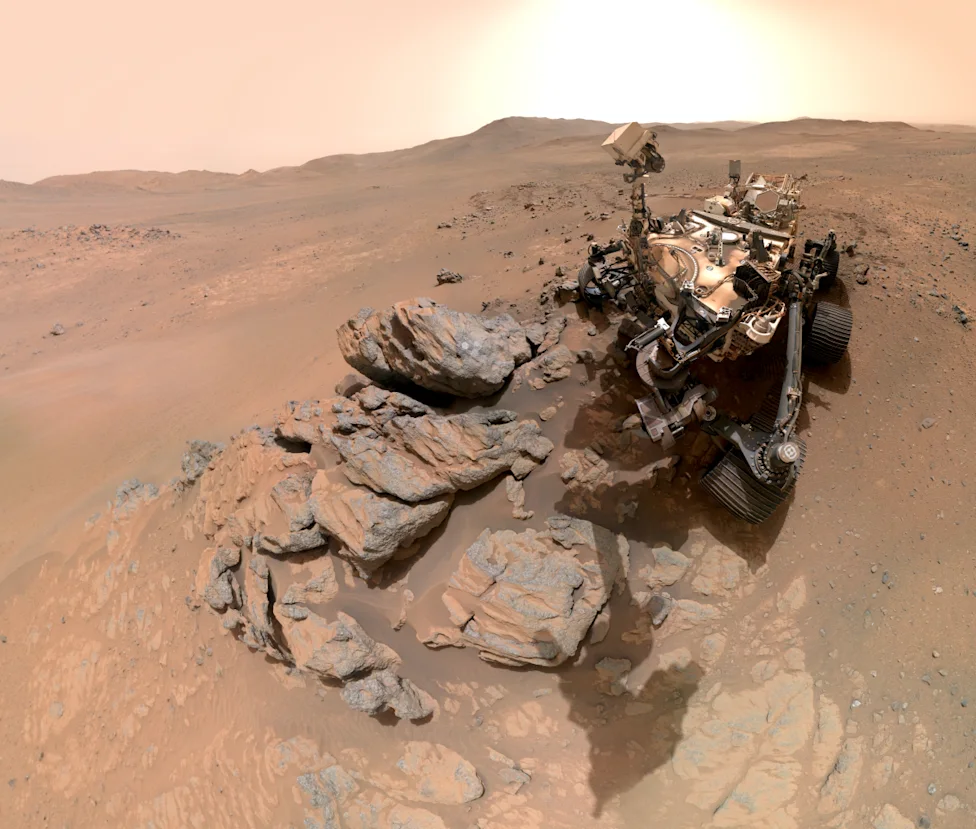
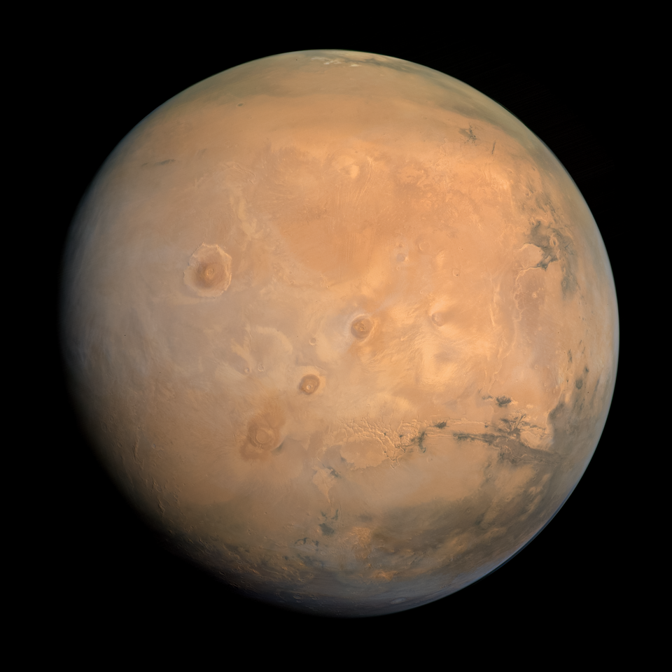

Mars Facts
- Mars has a average distance of 228 million km from the Sun.
- The temperatur on Mars is -153°C to 20°C.
- Mars has 2 moons.
- Mars is a terrestrial planet.
- The size of planet Mars is about 21,000 km.


Mars gets its red color from rusty iron in its soil
